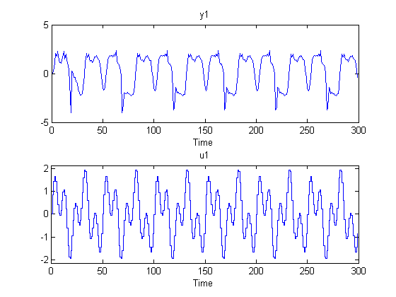
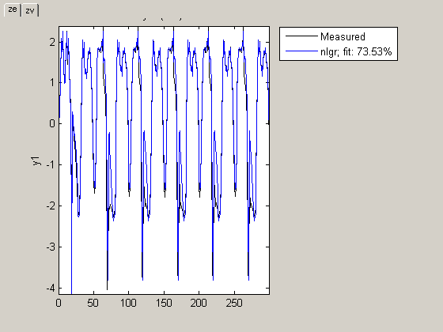
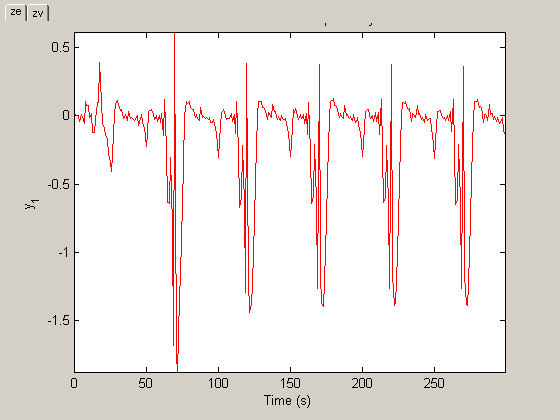
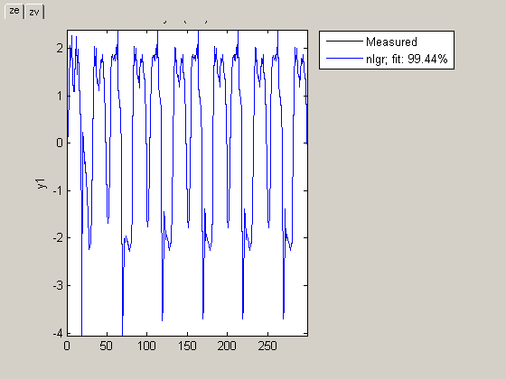
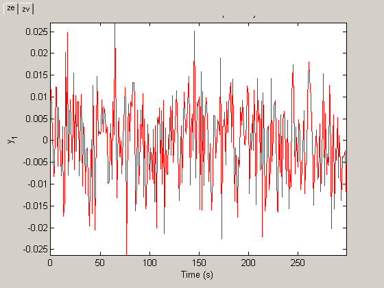
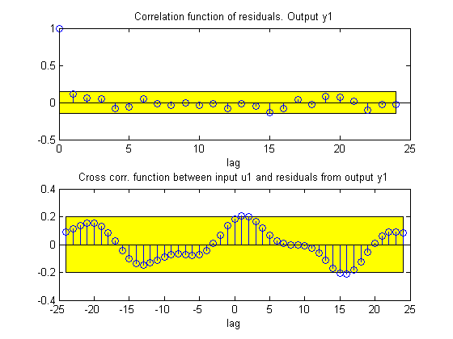
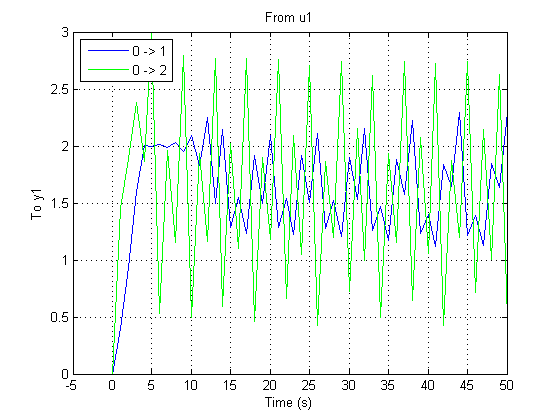
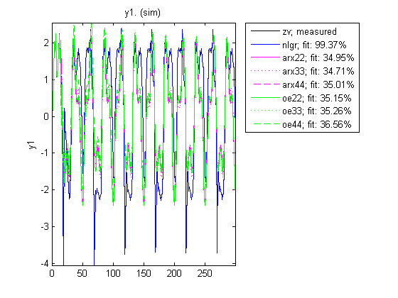

Narendra-Li Benchmark System: MATLAB File Modeling of a Discrete-Time System
This demo considers identification of a complex yet artificial nonlinear discrete-time system with one input and one output. The system was originally proposed and discussed by Narendra and Li in the article
K. S. Narendra and S.-M. Li. "Neural networks in control systems". In Mathematical Perspectives on Neural Networks (P. Smolensky, M. C. Mozer, and D. E. Rumelhard, eds.), Chapter 11, pages 347-394, Lawrence Erlbaum Associates, Hillsdale, NJ, USA, 1996.
and has been considered in numerous discrete-time identification examples.
Contents
Discrete-Time Narendra-Li Benchmark System
The discrete-time equations of the Narendra-Li system are:
x1(t+Ts) = (x1(t)/(1+x1(t)^2)+p(1))*sin(x2(t))
x2(t+Ts) = x2(t)*cos(x2(t)) + x1(t)*exp(-(x1(t)^2+x2(t)^2)/p(2))
+ u(t)^3/(1+u(t)^2+p(3)*cos(x1(t)+x2(t))y(t) = x1(t)/(1+p(4)*sin(x2(t))+p(5)*sin(x1(t)))
where x1(t) and x2(t) are the states, u(t) the input signal, y(t) the output signal and p a parameter vector with 5 elements.
IDNLGREY Discrete-Time Narendra-Li Model
From an IDNLGREY model file point of view, there is no difference between a continuous- and a discrete-time system. The Narendra-Li model file must therefore return the state update vector dx and the output y, and should take t (time), x (state vector), u (input), p (parameter(s)) and varargin as input arguments:
function [dx, y] = narendrali_m(t, x, u, p, varargin) %NARENDRALI_M A discrete-time Narendra-Li benchmark system.
% Output equation. y = x(1)/(1+p(4)*sin(x(2)))+x(2)/(1+p(5)*sin(x(1)));
% State equations.
dx = [(x(1)/(1+x(1)^2)+p(1))*sin(x(2)); ... % State 1.
x(2)*cos(x(2))+x(1)*exp(-(x(1)^2+x(2)^2)/p(2)) ... % State 2.
+ u(1)^3/(1+u(1)^2+p(3)*cos(x(1)+x(2))) ...
];Notice that we have here chosen to condense all 5 parameters into one parameter vector, where the i:th element is referenced in the usual MATLAB® way, i.e., through p(i).
With this model file as a basis, we next create an IDNLGREY object reflecting the modeling situation. Worth stressing here is that the discreteness of the model is specified through a positive value of Ts (= 1 second). Notice also that Parameters only holds one element, a 5-by-1 parameter vector, and that SETPAR are used to specify that all the components of this vector are strictly positive.
FileName = 'narendrali_m'; % File describing the model structure. Order = [1 1 2]; % Model orders [ny nu nx]. Parameters = {[1.05; 7.00; 0.52; 0.52; 0.48]}; % True initial parameters (a vector). InitialStates = zeros(2, 1); % Initial initial states. Ts = 1; % Time-discrete system with Ts = 1s. nlgr = idnlgrey(FileName, Order, Parameters, InitialStates, Ts, 'Name', ... 'Discrete-time Narendra-Li benchmark system', ... 'TimeUnit', 's', 'Display', 'Full'); setpar(nlgr, 'Minimum', {eps(0)*ones(5, 1)});
A summary of the entered Narendra-Li model structure is obtained through the PRESENT command:
present(nlgr);
Time-discrete nonlinear state-space model defined by 'narendrali_m' (MATLAB file):
x(t+Ts) = F(t, u(t), x(t), p1)
y(t) = H(t, u(t), x(t), p1) + e(t)
with 1 input, 2 states, 1 output, and 5 free parameters (out of 5).
Input:
u(1) u1(t)
States: initial value
x(1) x1(t) xinit@exp1 0 (fix) in [-Inf, Inf]
x(2) x2(t) xinit@exp1 0 (fix) in [-Inf, Inf]
Output:
y(1) y1(t)
Parameters: value
p1(1) p1 1.05 (est) in ]0, Inf]
p1(2) 7 (est) in ]0, Inf]
p1(3) 0.52 (est) in ]0, Inf]
p1(4) 0.52 (est) in ]0, Inf]
p1(5) 0.48 (est) in ]0, Inf]
Created: 29-Jun-2010 23:41:08
Last modified: 29-Jun-2010 23:41:08
Input-Output Data
Two input-output data records with 300 samples each, one for estimation and one for validation purposes, are available. The input vector used for both these records is the same, and was chosen as a sum of two sinusoids:
u(t) = sin(2*pi*t/10) + sin(2*pi*t/25)
for t = 0, 1, ..., 299 seconds. We create two different IDDATA objects to hold the two data records, ze for estimation and zv for validation purposes.
load(fullfile(matlabroot, 'toolbox', 'ident', 'iddemos', 'data', 'narendralidata')); ze = iddata(y1, u, Ts, 'Tstart', 0, 'Name', 'Narendra-Li estimation data', ... 'ExperimentName', 'ze'); zv = iddata(y2, u, Ts, 'Tstart', 0, 'Name', 'Narendra-Li validation data', ... 'ExperimentName', 'zv');
The input-output data that will be used for estimation are shown in a plot window.
figure('Name', ze.Name);
plot(ze);
 Figure 1: Input-output data from a Narendra-Li benchmark system.
Performance of the Initial Narendra-Li Model
Let us now use COMPARE to investigate the performance of the initial Narendra-Li model. The simulated and measured outputs for both ze and zv are shown in a plot window, and as can be seen the fit is not that bad (around 74 % in both cases). Here we should point out that COMPARE by default estimates the initial state vector, in this case one initial state vector for ze and another one for zv. Click on the "TABS" located in the left upper corner of the plot axis to display data from ze and zv, respectively.
figure; compare(merge(ze, zv), nlgr);
Figure 2: Comparison between true outputs and the simulated outputs of the initial Narendra-Li model.
By looking at the prediction errors obtained via PE, we realize that the initial Narendra-Li model shows some systematic and periodic differences as compared to the true outputs.
figure; pe(merge(ze, zv), nlgr);
Figure 3: Prediction errors obtained with the initial Narendra-Li model.
Parameter Estimation
In order to reduce the systematic discrepancies we estimate all 5 parameters of the Narendra-Li model structure using PEM. The estimation is carried out based on the estimation data set ze only.
nlgr = pem(ze, nlgr, 'Display', 'Full');
Criterion: Trace minimization
Scheme: Trust-Region Reflective Newton (LSQNONLIN, LargeScale = 'On')
--------------------------------------------------------------
Norm of First-order
Iteration Cost step optimality
--------------------------------------------------------------
0 0.197618 - -
1 0.134505 0.332 168
2 0.0830092 0.122 377
3 0.0717264 0.85 821
4 0.0492759 0.178 1.42e+003
5 0.00218368 0.153 317
6 0.000139495 0.0468 21.9
7 9.42586e-005 0.0231 10.3
8 8.99462e-005 0.000876 3.38
9 8.93444e-005 0.00161 2
10 8.92829e-005 0.00101 1.19
11 8.92734e-005 0.000252 0.284
12 8.92734e-005 6.31e-005 0.284
13 8.92704e-005 1.58e-005 0.13
14 8.92704e-005 1.58e-005 0.13
15 8.92704e-005 3.94e-006 0.13
16 8.92704e-005 9.86e-007 0.13
17 8.92704e-005 2.47e-007 0.13
18 8.92704e-005 6.16e-008 0.13
19 8.92704e-005 1.54e-008 0.13
20 8.92704e-005 3.85e-009 0.13
--------------------------------------------------------------
Performance of the Estimated Narendra-Li Model
COMPARE is once again employed to investigate the performance of the estimated model, but this time we use the model's internally stored initial state vector ([0; 0] for both experiments) without any initial state vector estimation.
figure; compare(merge(ze, zv), nlgr, 'init', 'm');
Figure 4: Comparison between true outputs and the simulated outputs of the estimated Narendra-Li model.
The improvement after estimation is significant, which perhaps is best illustrated through a plot of the prediction errors:
figure; pe(merge(ze, zv), nlgr);
Figure 5: Prediction errors obtained with the estimated Narendra-Li model.
The modeling power of the estimated Narendra-Li model is also confirmed through the correlation analysis provided through RESID:
figure('Name', [nlgr.Name ': residuals of estimated model']); resid(zv, nlgr);
Figure 6: Residuals obtained with the estimated Narendra-Li model.
In fact, the obtained model parameters are also quite close to the ones that were used to generate the true model outputs:
disp(' True Estimated parameter vector'); ptrue = [1; 8; 0.5; 0.5; 0.5]; fprintf(' %1.4f %1.4f\n', [ptrue'; getpvec(nlgr)']);
True Estimated parameter vector 1.0000 1.0000 8.0000 8.0082 0.5000 0.5003 0.5000 0.4988 0.5000 0.5018
Some additional model quality results (loss function, Akaike's FPE, and the estimated standard deviations of the model parameters) are next provided via the PRESENT command:
present(nlgr);
Time-discrete nonlinear state-space model defined by 'narendrali_m' (MATLAB file):
x(t+Ts) = F(t, u(t), x(t), p1)
y(t) = H(t, u(t), x(t), p1) + e(t)
with 1 input, 2 states, 1 output, and 5 free parameters (out of 5).
Input:
u(1) u1(t)
States: initial value
x(1) x1(t) xinit@exp1 0 (fix) in [-Inf, Inf]
x(2) x2(t) xinit@exp1 0 (fix) in [-Inf, Inf]
Output:
y(1) y1(t)
Parameters: value standard dev
p1(1) p1 0.999993 0.0118608 (est) in ]0, Inf]
p1(2) 8.00821 0.893465 (est) in ]0, Inf]
p1(3) 0.500319 0.0315734 (est) in ]0, Inf]
p1(4) 0.498842 0.267041 (est) in ]0, Inf]
p1(5) 0.501761 0.312596 (est) in ]0, Inf]
The model was estimated from the data set 'Narendra-Li estimation data', which
contains 300 data samples.
Loss function 8.92704e-005 and Akaike's FPE 9.2246e-005
Created: 29-Jun-2010 23:41:08
Last modified: 29-Jun-2010 23:41:17
As for continuous-time input-output systems, it is also possible to use STEP for discrete-time input-output systems. Let us do this for two different step levels, 1 and 2:
figure('Name', [nlgr.Name ': step responses of estimated model']); t = (-5:50)'; step(nlgr, 'b', 'InputLevels', [0;1], t); line(t, step(nlgr, 'InputLevels', [0;2], t), 'color', 'g'); grid on; legend('0 -> 1', '0 -> 2', 'Location', 'NorthWest'); axis('tight');
Figure 7: Step responses obtained with the estimated Narendra-Li model.
We finally conclude this demo by comparing the performance of the estimated IDNLGREY Narendra-Li model with some basic linear models. The fit obtained for the latter models are considerably lower than what is returned for the estimated IDNLGREY model.
nk = delayest(ze); arx22 = arx(ze, [2 2 nk]); % Second order linear ARX model. arx33 = arx(ze, [3 3 nk]); % Third order linear ARX model. arx44 = arx(ze, [4 4 nk]); % Third order linear ARX model. oe22 = oe(ze, [2 2 nk]); % Second order linear OE model. oe33 = oe(ze, [3 3 nk]); % Third order linear OE model. oe44 = oe(ze, [4 4 nk]); % Fourth order linear OE model. figure; compare(zv, nlgr, 'b', arx22, 'm-', arx33, 'm:', arx44, 'm--', ... oe22, 'g-', oe33, 'g:', oe44, 'g--');
Figure 8: Comparison between true output and the simulated outputs of a number of estimated Narendra-Li models.
Conclusions
In this demo we have used a fictive discrete-time Narendra-Li benchmark system to illustrate the basics for performing discrete-time IDNLGREY modeling.
Additional Information
For more information on identification of dynamic systems with System Identification Toolbox™ visit the System Identification Toolbox product information page.